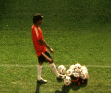

|
SUBSTITUTE
Fred Poulet & Vikash Dhorasoo | F 2006 | 71 Min.
Format: 35mm
Material: Super-8
Originalsprache: Französisch
Drehbuch: Fred Poulet, Vikash Dhorasoo
Kamera: Fred Poulet, Vikash Dhorasoo
Schnitt: Fred Poulet, Sophie Bolze
Ton: Dominique Dalmasso
Mit Vikash Dhorasoo
Produktion: Local Films, Paris; Label Blue, Amiens
Juni 2006. Fred Poulet, Sänger, Autor und Regisseur von Musikvideoclips, überreicht dem französischen Fußballnationalspieler Vikash Dhorasoo eine Super-8-Kamera, mit der dieser seinen Alltag während der Fußballweltmeisterschaft aufnehmen sollte. In Hotelzimmern, Bussen, am Telefon, in den Stadien entstand der Film als Tagebuch der Fifa-Weltmeisterschaft. Vikash Dhorasoo spielte während der gesamten WM, mit dem Endspiel Frankreich gegen Italien, nur sechzehn Minuten lang auf dem Feld. Es war sein Schicksal, der zwölfte Mann, der Ersatzmann, zu sein. "Substitute" ist das Porträt eines einsamen und verletzten Mannes inmitten des größten Sportereignisses der Welt.
„Was die Ästhetik des Films anging, so fühlte ich mich zwischen dem hymnischen Film Yeux dans les Bleus und den NASA-Teleobjektiven, mit denen Zidane, Portrait du XXIième siècle aufgenommen wurde, regelecht eingezwängt. Die einzig angemessene Alternative schien mir, einen quasi klammheimlich aufgenommenen Super8-Film zu drehen. Die Ungenauigkeit der Bilder schien mir notwendig, um das Leben hinter den spektakulären Ereignissen zu erfassen.“ (Fred Poulet)
Vikash Dhorasoo, geb. 1973 in Harfleur, Frankreich, spielte seit 1993 als Fußballprofi in Le Havre, Lyon, Bordeaux, Mailand und Paris. Sein Länderspieldebüt bestritt er 1999, seitdem hat er achtzehn Mal in der französischen Nationalmannschaft gespielt.
Fred Poulet, geb. 1961 in Dijon. Ende der achtziger Jahre zog er nach Paris, wo er als Filmausstatter arbeitete und Songs komponierte. 1992 wurde er von Pierre Barough entdeckt, der ihm einen Vertrag bei der Musikfirma Saravah anbot, für die Poulet drei Alben produzierte. Seit 1996/97 realisierte er zahlreiche Musikvideos. Substitute ist sein erster abendfüllender Film.
Filme (Auswahl): Walking Indurain 1996 | Au dépanneur 1997 | La scie électrique 2001 | Milan Athletic Cinema. Alain Delon. Electric Fish 2005 | Substitute 2006
zurück
|